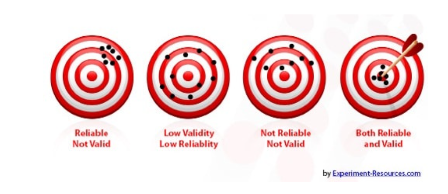

real <- rio::import(file = "adat/megbizhatosag_tantargyak.xlsx")
str(real)
#> 'data.frame': 9 obs. of 4 variables:
#> $ matek : num 5 4 3 2 5 1 5 2 5
#> $ fizika : num 5 5 3 3 4 2 4 3 5
#> $ informatika: num 4 4 4 2 5 1 5 2 5
#> $ kemia : num 5 5 3 3 5 1 5 3 53 Megbízhatóság elemzés
A pszichológiai tesztelés során használt mérőeszközök legfontosabb tulajdonsága a megbízhatóság (reliabilitás) és a validitás (Carver és Scheier, 2006; Nagy, 2006). A reliabilitás azt mutatja meg, hogy az eszköz mennyire mér megbízhatóan, pontosan, mennyire bízhatunk abban, hogy a mérés második és harmadik alkalommal is ugyanazt az eredményt adja, amit az első esetben. A validitás vagy érvényesség azt jelenti, hogy a mérőeszköz azt méri, amit mérni szeretnénk. A klasszikus ábrázolás szerint mérőeszközünk a megbízhatóság és az érvényesség alapján a lenti négy csoportok egyikébe is eshet:

Egy mérőeszköz megbízhatóságát mindig úgy vizsgáljuk, hogy a mérés eredményét egy vagy több más eszköz eredményével hasonlítjuk össze. Az összehasonlítás mindig korrelációt típusú vizsgálatot jelent, és a magasabb korreláció egyben magasabb megbízhatóságot jelöl. Ennek megfelelően a megbízhatósági mutatók értéktartománya megegyezik a korrelációs együttható értéktartományával (feltehetően azonban 0 és 1 közötti lesz az értéke, negatív értéket ritkán kapunk és el is szeretnénk kerülni).
A megbízhatósággal kapcsolatban három aspektust érdemes vizsgálni:
- belső konzisztencia – az önjellemző skálák sok tételből állnak (melyik mindegyike külön mérőeszköznek tekinthető), ezek kitöltésével egyidejűleg végzünk egymással ekvivalens, párhuzamos méréseket.
- időbeli stabiltás (teszt-reteszt reliabilitás) – időben eltolva, ugyanazon mérést egy későbbi időpontban megismételve jutunk két mérési eredményhez, például, ha ugyanazt az önjellemző skálát mondjuk, egy nap eltéréssel felvesszük ugyanazon személyekkel.
- értékelő megbízhatóság (inter-rater reliabilitás) – amikor megfigyelő pontoz, akkor a megfigyelő személy a mérőeszköz, így a megfigyelői ítéleteket az értékelő megbízhatóságának meghatározásával ellenőrizzük.
3.1 Cronbach-alfa – belső konzisztencia mérése
Főkomponens elemzés segítségével könnyen tudunk több változót - viszonylag csekély veszteséggel - egyetlen változóba tömöríteni, ezért gyakran használják kérdőívek itemeinek szelekciójára, valamint megbízhatóság (reliabilitás) vizsgálatra. A klasszikus tesztelmélet keretein belül azonban a tesztek megbízhatóságának (reliabilitásának) több lehetséges mutatója is létezik.
Cronbach 1951-es munkájában publikálta azon nézetét, hogy a korábbi egyszerű tesztfelezéses eljárás helyett egy annál tökéletesebb mutatót kellene használni a tesztek megbízhatóságának indikátoraként. Ha az itemek száma alacsony vagy az itemek közötti átlagos korreláció alacsony, akkor csökkenni fog a Cronbach-féle alfa értéke is. Az is egyértelmű, hogy az itemek közötti alacsony korreláció arra enged következtetni, hogy a teszt itemjei nem egy és ugyanazon dolog vizsgálatára szolgálnak, a belőlük képzendő tesztérték nem alkalmas sem elméleti, sem pedig gyakorlati felhasználásra.
Az ómega (McDonald \(\omega\)) korrigálja a Cronbach-alfa torzítását, érdemes elvégezni az elemzést ezzel a mutatóval is (Kárász és mtsai., 2022; Malkewitz és mtsai., 2023).
3.2 Példa: Real tárgyak iránti fogékonyság
Egy fiktív adatbázis 9 tanuló iskolai jegyeit tartalamzza reál tantárgyakból (matematika, fizika, kémia, informatika) (megbizhatosag_tantargyak.xlsx). Vizsgáljuk meg, ha a reál tantárgyak iránti fogékonyságot ezzel a 4 érdemjeggyel mérnénk, akkor ez megbízhatóság szempontjából alkalmas mérőeszköz lenne.
A Cronbach alfa meghatározását végezhetjük a {psych} csomag alpha() függvényével.
psych::alpha(real) # Cronbach-alfa
#>
#> Reliability analysis
#> Call: psych::alpha(x = real)
#>
#> raw_alpha std.alpha G6(smc) average_r S/N ase mean sd me...
#> 0.97 0.97 0.98 0.89 33 0.017 3.7 1.4 ...
#>
#> 95% confidence boundaries
#> lower alpha upper
#> Feldt 0.91 0.97 0.99
#> Duhachek 0.93 0.97 1.00
#>
#> Reliability if an item is dropped:
#> raw_alpha std.alpha G6(smc) average_r S/N alpha se
#> matek 0.94 0.95 0.95 0.86 18 0.032
#> fizika 0.97 0.98 0.97 0.93 39 0.015
#> informatika 0.96 0.97 0.97 0.92 33 0.019
#> kemia 0.94 0.95 0.96 0.86 19 0.029
#> var.r med.r
#> matek 0.0070 0.89
#> fizika 0.0013 0.95
#> informatika 0.0016 0.93
#> kemia 0.0084 0.87
#>
#> Item statistics
#> n raw.r std.r r.cor r.drop mean sd
#> matek 9 0.99 0.98 0.98 0.97 3.6 1.6
#> fizika 9 0.92 0.93 0.91 0.88 3.8 1.1
#> informatika 9 0.95 0.94 0.93 0.90 3.6 1.5
#> kemia 9 0.98 0.98 0.98 0.96 3.9 1.5
#>
#> Non missing response frequency for each item
#> 1 2 3 4 5 miss
#> matek 0.11 0.22 0.11 0.11 0.44 0
#> fizika 0.00 0.11 0.33 0.22 0.33 0
#> informatika 0.11 0.22 0.00 0.33 0.33 0
#> kemia 0.11 0.00 0.33 0.00 0.56 0A McDonald \(\omega\) értékét kiszámolhatjuk a {psych} csomag omega() függvényével.
psych::omega(real, plot = F) # McDonald-ómega
#> Omega
#> Call: omegah(m = m, nfactors = nfactors, fm = fm, key = key, ...
#> digits = digits, title = title, sl = sl, labels = labels,
#> plot = plot, n.obs = n.obs, rotate = rotate, Phi = Phi, o...
#> covar = covar)
#> Alpha: 0.97
#> G.6: 0.98
#> Omega Hierarchical: 0.95
#> Omega H asymptotic: 0.96
#> Omega Total 0.99
#>
#> Schmid Leiman Factor loadings greater than 0.2
#> g F1* F2* F3* h2 u2 p2
#> matek 0.97 0.28 0.99 0.01 0.94
#> fizika 0.89 0.29 0.92 0.08 0.86
#> informatika 0.91 0.28 0.95 0.05 0.87
#> kemia 0.96 0.29 0.99 0.01 0.94
#>
#> With Sums of squares of:
#> g F1* F2* F3*
#> 3.48 0.17 0.16 0.04
#>
#> general/max 21.07 max/min = 4.03
#> mean percent general = 0.9 with sd = 0.04 and cv of 0.05
#> Explained Common Variance of the general factor = 0.91
#>
#> The degrees of freedom are -3 and the fit is 0
#> The number of observations was 9 with Chi Square = 0 with...
#> The root mean square of the residuals is 0
#> The df corrected root mean square of the residuals is NA
#>
#> Compare this with the adequacy of just a general factor and n...
#> The degrees of freedom for just the general factor are 2 and...
#> The number of observations was 9 with Chi Square = 5.14 w...
#> The root mean square of the residuals is 0.05
#> The df corrected root mean square of the residuals is 0.08
#>
#> RMSEA index = 0.401 and the 10 % confidence intervals are ...
#> BIC = 0.75
#>
#> Measures of factor score adequacy
#> g F1* F2* ...
#> Correlation of scores with factors 0.98 0.89 0.86 ...
#> Multiple R square of scores with factors 0.95 0.78 0.74 ...
#> Minimum correlation of factor score estimates 0.90 0.57 0.48 ...
#>
#> Total, General and Subset omega for each subset
#> g F1* F2* F3*
#> Omega total for total scores and subscales 0.99 0.98 0.99 NA
#> Omega general for total scores and subscales 0.95 0.89 0.91 NA
#> Omega group for total scores and subscales 0.04 0.09 0.08 NAA fenti elemzéseket jamovi-ban a Factor / Reliability Analysis menüpont segítségével végezhetjük el.
A fenti megbízhatósági elemzések azt mutatják, hogy a négy tantárgy alfa értéke 0,966, ami egy igen jó érték, hiszen közel van 1-hez (jamovi-ban: Scale Reliability Statistics). Az Item Reliability Statistics táblázat oszlopában szereplő értékek azt mutatják, mi történik, ha egy változót kiveszünk a modellből. Láthatjuk, hogy egyedül a fizika változó értéke növelné az alfát, de a növekedés mértéke elenyésző lenne, tehát nem éri meg eltávolítani a változót, hiszen minél több információnk van egy személyről, annál jobb.